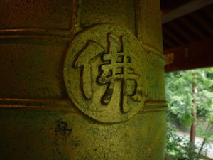
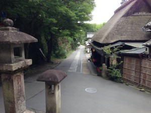
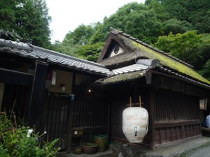
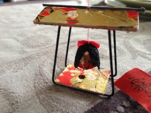
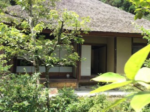
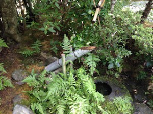
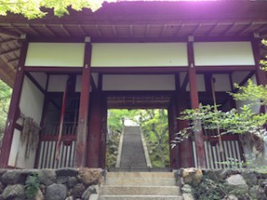
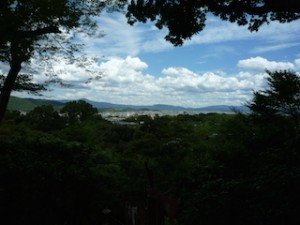
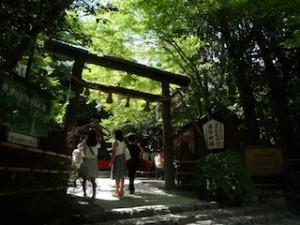
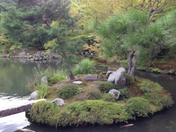

Arashiyama (嵐山) is a famous place for sakura (cherry blossoms) in spring, and the landscape of the mountains with red and yellow leaves in fall. The scenery there is really picturesque. Arashiyama has been a representative sightseeing spot of Kyoto since noble families used this place as a resort area in the Heian period (794-1192). The Togetsu-kyô bridge (渡月橋), which hangs over the Katsura-gawa river (桂川), gives us a symbolic view of Arashiyama.
Saga or Sagano (嵯峨野) is another popular tourist area. This area stretches widely between the north of the Katsura-gawa river and the south of Mt.Atago-yama (愛宕山). There is a small passage to visit sightseeing spots. It’s very convenient and pleasant for someone who likes walking when he travels.
Here I’ll show you what we did in these two areas. You’ll see we have strong legs.
Otagi Nenbutsu-Ji Temple (愛宕念仏寺) Otagi-Ji Official Site
Around at 9 o’clock, we arrived at Saga Arashiyama Station, and walked a little looking for the bus stop, called Nonomiya (野々宮) stop. The bus went deep into the Sagano area, and brought us to Otagi Nenbutsu-Ji Temple. There was almost no one in the bus… I was a little worried, but this temple is famous for its quietness. Usually many tourists come to Saga and Arashiyama, but they don’t spend much time visiting places. They are always pressed for time. Fortunately we had plenty of time there, so we could visit many places (but still not all…).
This temple was established in the middle of the 8th century by Empress Shôtoku (718–770), the 6th empress in Japanese history. It was originally situated in the east of the Heiankyo (the former name of Kyoto), but the temple was terribly damaged by the flooding of the Kamo-gawa river and almost abandoned in beginning of the Heian period.
Commanded by Emperor Daigo (885–930), a priest of the Tendai sect, called Senkan Naigu (918–984), re-established Otagi-dera Temple. It is also said that Senkan wouldn’t stop chanting a prayer all his life, and he came to be called “nenbutsu shonin” (念仏上人), which means “Saint Prayer”. “Nenbutsu” is prayer. This is why Otagi-dera started to be called Otagi Nenbutsu-JiTemple. In 1922, this temple was moved to the current location for further protection of the hall and religious relation to Mt.Atago-yama.


However, restoration work was not going well. There were many difficulties. Then, in 1955, Nishimura Kôchô was selected as the chief priest of Otagi Nenbutsu-Ji, to restore the temple. With his arrival, “Shôwa no Rakan-bori” started in 1981. Rakans are stone statues representing the disciples of Buddha, and all rakans you see at this temple were carved by amateur visitors. Each statue is unique and characteristic.
{kind=link}


“Sanbo no Kane” (三宝の鐘), the bells of the three treasures; the Buddha (佛), the Dharma (法), and the priests (僧). The bells send the mind of Buddha to nature.



Kokûzô Bosatsu (虚空蔵菩薩), the Bodhisattva of Space. His wisdom is said to be boundless as space itself.
(*more info later on this page in the article for Kokûzô Horin-JiTemple)

At Otagi Nenbutsu-Ji you can get a map of Atago-kaido (愛宕街道). Atago-kaido or Atago street goes down to Arashiyama. There are many sites to visit on the way!
First you come to Saga Torii Moto-machi (嵯峨鳥居本町). This is a preservation district for its traditional buildings. There are some souvenir shops too.




Adashi no Mayu-mura (あだしのまゆ村): this is a cocoon-doll shop. There are many cute dolls colorfully decorated. The one I chose was a princess in a palanquin. It’s very cute. I bought another one for my mother-in-law. It’s a good present for women! Each doll has a message strip hanging from the palanquin. My message says, “It’s a souvenir from Kyoto!” and my mother’s says, “Thank you to mom.” You can change the message. There are several versions. The staff were very kind too. They were serving tea to visitors!


Iwai (井和井): another souvenir shop across from Mayu-mura, specializing in bamboo products. Here, too, we were served tea! What a good service! There are various kinds of goods made out of bamboo. We bought bamboo cups. They always remind us of the trip to Sagano.

After shopping, we restarted to walk down the street and visited some temples.
Giou-JiTemple (祇王寺) Giou-Ji Official Site
This temple is also known as “Koke Dera”, Temple of Moss. When you step in its garden, you’ll see it’s a different world. It is very beautiful. It may be difficult for some foreigners to understand why Japanese love moss, but this is the beauty of Japan. We feel a long lapse of time, looking at this, and imagine how long it has been there. We think of this scene as the art created by time.

{kind=link}

{kind=link}
Rakushisha (落柿舎) Rakushisha Official Site
Rakushisha is the cottage of a poet, Mukai Kyorai (1651–1704). He was one of the ten disciples of a famous haiku poet, Matsuo Basho. It is said that there were 40 kaki trees around the house. It tells you how the life of the poet at that time was.



Have you ever heard “Shishi-odoshi” (鹿威し)? It literally means “scare the deer” in Japanese. It is a device to scare away birds and beasts damaging agriculture or gardens. When the end section of the bamboo tube is filled with water, the tube inclines, and the water discharges. The bamboo tube returns to the original angle, and then the bottom of the tube hits on the stone with a popping sound.

Jojakko-ji Temple (常寂光寺) Jojakko-Ji Official Site
This temple is located on the slope of Mt. Ogura, so you can get a full view of the Sagano area from there. In the Heian period, a court noble, Fujiwara no Sadaie, had a villa in this place, and in 1596 the head priest of Nichiren Sect, Nittei, established this temple as a place of his seclusion.


The Tunnel of Bamboo
Crossing the rail road, you will enter the bamboo tunnel. It is really amazing!
{kind=link}
{kind=link}
Nonomiya-Jinja (野宮神社） Nonomiya-Jinja Official Site
In this magnificent bamboo forest, a small shrine stands quietly. But a lot of visitors !!!
When a new emperor ascended the throne, new Saio [imperial princesses] chosen by divination stayed in Nonomiya-jinja Shrine for a year or more to purify themselves before becoming representatives of the imperial family at Ise Shrine.
When a new emperor ascended the throne, new Saio would be chosen by divination from the unmarried imperial princess and queens, enter a Nonomiya that had been constructed at a pure place in Sagano and undergo a year of purification before going to serve at Ise-jingu Shrine.


After visiting Nonomiya-jinja, we came back where we were in the morning, the bus stop! And it was time to eat lunch.
In Arashiyama, we enjoyed traditional Kyoto cuisine.
Restaurant Ine [稲]: It is very close to Nonomiya-jinja and the bus stop. There are many shops around here. But I chose this restaurant because they serve Yuba [湯葉]. Yuba is a processed food made from soybeans. It is like skin of tofu.

 ← yuba
← yuba


I recommend, “Teoke kumiage yuba gozen.” Teoke” means handy pail. You see it in the photo above. Yuba is served in the pail. After you finish yuba, you put special sauce in it and drink it as soup. It is delicious!
Having had a great meal, we then headed for the famous bridge, Togetsukyo.
{kind=link}
People, people, people … more and more people are arriving in the afternoon.
But anyway, our goal was not this bridge. We crossed the bridge, and continued to a less-known but “cool” temple.
Kokûzô Hôrin-ji Temple [虚空蔵法輪寺]
This temple is located halfway up Mt. Arashiyama. The Bodhisattva called Kokûzô is the principal object of worship at this temple, and it has been attracting people who wish for wisdom and artistic skills. Also, it is a guardian deity of those who were born in the years of Ox and Tiger of the Chinese zodiac.

And our goal was to visit Denden-gu [電電宮]. This is a tutelary shrine of Kokûzô Hôrin-Ji. Denden Myôjin, a god of thunder, is enshrined. In the modern times, the use of radio devices is increasing, and in 1956 the then Director of Kinki Bureau of Telecommunications suggested that Denden Myôjin should be worshipped as the god of electricity and electromagnetic waves. This shrine also enshrine the spirits of pioneering researchers and entrepreneurs in the field of electricity and electromagnetic waves. A portrait of Edison, as a representative researcher of electricity, and another portrait of Hertz, as a researcher of electromagnetic waves, are hung in the Denden Pagoda.
Today this shrine also attracts many worshippers who work in the IT field.
You can buy some amulets and special stickers of Denden Myôjin. Denden Myôjin protects you during dangerous work using electricity or against losing important data.

The view from Hôrin-Ji Temple is wonderful too.
{kind=link}
The last effort in Arashiyama … we visited Tenryu-Ji Temple. We went back the way we had come.
Tenryu-Ji Temple [天龍寺] Tenryu-JiOfficial Site *World Heritage
Tenyu-Ji is the head temple of Tenryu-Ji school of Rinzaishu Sect. Its principal image is Shaka-nyorai. The patron of the temple in its founding was Ashikaga Takauji and the first chief priest was Mmusô Soseki.
Originally, a temple named Danrin-Ji was in this place in the beginning of the Heian Period [794-1192], which was established by Tachibana no Kachiko, Empress of Emperor Saga. However, after that, the temple fell into ruin over the next four hundred years. Then, Emperor Gosaga [1220–1272] and his son, Emperor Kameyama [1249–1305] , took care of the place and built an Imperial Villa, which they called “Kameyama-den”. Kameyama means “mountain of turtle”. It indicates the mountain we call Mt. Ogurayama today. This mountain looks like a turtle.
Ashikaga Takuji [1305–1358] was the founder and first shogun of the Ashikaga Shogunate [1338–1573]. It was the beginning of the Muromachi Period [1337–1573] too. He was a powerful senior vassal in the Kamakura Shogunate [1192–1333], but when Emperor Godaigo raised an army to overthrow the Kamakura government, he sided with the Emperor. This is how the Kamakura era ended.

Ashikaga Takauji
Emperor Godaigo had been long planning to take back political power, but had difficulty in doing so. Actually he failed twice in his attempt to overthrow the Kamakura bakufu and was once banished to Oki Island. However he persistently refused to abdicate while Emperor Kogon was enthroned from the Jimyoin Imperial line.
In this situation, Emperor Godaigo escaped from Oki Island, and he raised an army with samurai who were not satisfied with the Kamakura bakufu. And one of them was Ashikaga Takauji. In the following year, Emperor Godaigo started a new government which integrated both court nobles and samurai with the Emperor on top of the structure.
However, in reality, the court nobles were more favored in the Emperor’s direct administration.
Ashikaga Takauji was terribly disappointed and came to think about re-establishing a samurai government. He banished Emperor Godaigo to Yoshino [Southern Court 南朝], present-day Nara prefecture, and placed Emperor Kômyô [from the Jimyoin Imperial line] on the throne [Northern Court 北朝]. This means, in our history, we had two emperors … and it is called the period of the Northern and Southern Courts, 南北朝時代 [1336–1392]. This state continued as long as 60 years.
During the conflict, social conditions were degrading. The Ashikaga clan also came to feel it was better to make peace, and finally in 1392, Ashikaga Yoshimitsu [1358–1408], a grandson of Takauji, reconciled with the South Court, which was actually weakening a lot during a number of battles. The two courts were put back together after Emperor Gokameyama [the South Court] returned the three sacred treasures of the Japanese Imperial Court to Emperor Gokomatsu [the North Court]. These treasures are the symbol of the imperial family.
After this event, the Imperial Court lost all its political power, and more and more samurai were gaining power, which later led to the Sengoku Period [the Period of Warring States] and produced a number of famous Sengoku Busho [military commanders], such as Oda Nobunaga, Toyotomi Hideyoshi, and Tokugawa Ieyasu.

It is said that Takauji was actually a very generous and honest person. He felt really guilty when he heard that Emperor Godaigo died sadly in Yoshino. He was obsessed with this thought, and consulted a monk named Musô Soseki. And they decided to construct Tenryu-Ji Temple to appease the spirit of Emperor Godaigo.
However, at that time, there was not enough money to build a temple because of too many battles. Then he sent a trading boat called “Tenryu-Ji sen” to Gen [the name of China at that time] and made profit, which was used for construction of Tenryu-Ji Temple.
It is also said that Takauji was carrying soil with Musô Soseki for construction of the base of the temple.


{kind=link}
This temple is not just beautiful but has a long long history.
We walked and walked in Saga and Arashiyama all day long. We were very tired but it was a lot of fun at the same time. Each temple or shrine has an interesting history. Please respect them when you visit them, thinking about their old old stories.